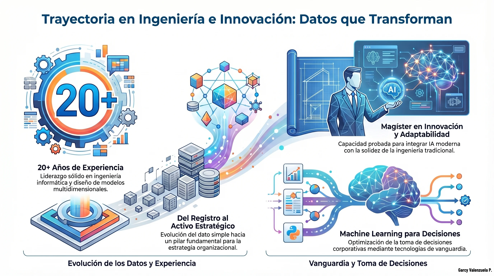

Acerca de mí
Especialista en Data Science y Machine Learning, enfocado en transformar datos en decisiones estratégicas con impacto real en negocio.
He desarrollado soluciones de automatización y análisis que optimizan procesos, reducen tiempos operativos y mejoran la toma de decisiones en entornos reales.
Complemento mi trabajo profesional con docencia, compartiendo conocimiento en inteligencia artificial y tecnologías emergentes.
